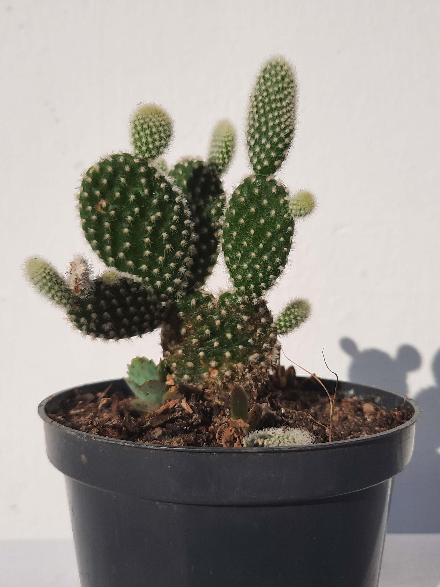

Cacto Orelha-de-coelho

Nome Científico
Opuntia Microdasys.
Tamanho
Até 20cm.
Cores Comuns
Tem troncos verdes com espinhos amarelos. Forma flores amarelas
Características
- Floresce nos meses quentes.
- É original do México.
- Recomenda-se cultivá-los em vasos isolados.
Sobre o Cultivo
Iluminação: Deve-se cultivar em sol, mas pode ser adaptado para sombra, necessitando, ainda de boa iluminação.
Rega: Não deve ser regado com frequência, apenas quando o solo estiver seco.
Desenvolvido e atualizado por: Liliane Rodrigues, Marilly Hellen e Natan Luis.